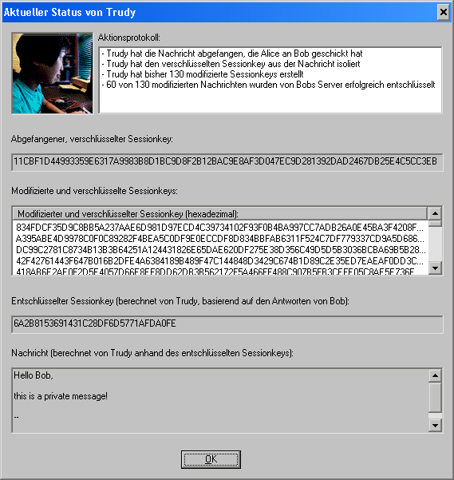

Sie können diesen Dialog aufrufen, indem Sie im Dialog Seitenkanalangriff auf das Hybridverschlüsselungsprotokoll auf das Symbol von Trudy klicken.
Durch diesen Dialog erhalten Sie detaillierte Informationen über Trudy.

Rechts von Trudys Portrait befindet sich das Aktionsprotokoll, das alle wichtigen Schritte protokolliert, die Trudy während des Seitenkanalangriffs durchgeführt hat.
In einer Liste darunter sehen Sie alle Sessionkeys, die Trudy bisher – ausgehend vom ursprünglichen Sessionkey – modifiziert hat, um Bobs Server anzugreifen.
Nach Beendigung des Seitenkanalangriffs sehen Sie in diesem Dialog auch den von Alice berechneten Sessionkey. Mit diesem versucht Trudy die ursprüngliche Nachricht zu entschlüsseln. Das Entschlüsselungsergebnis befindet sich im Textfeld unter dem Sessionkey.